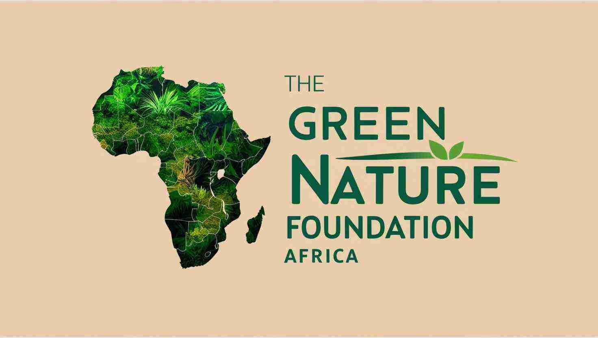
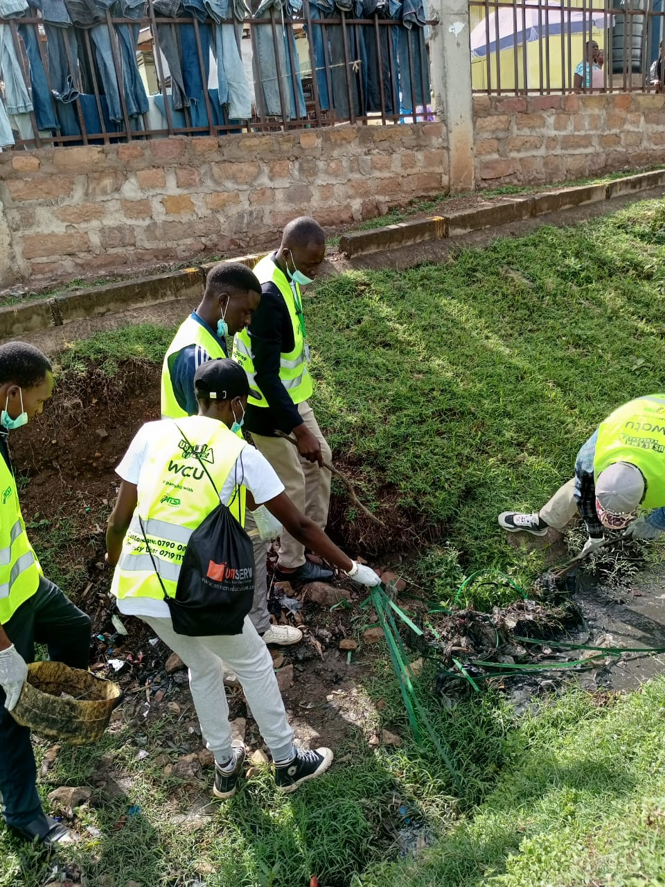
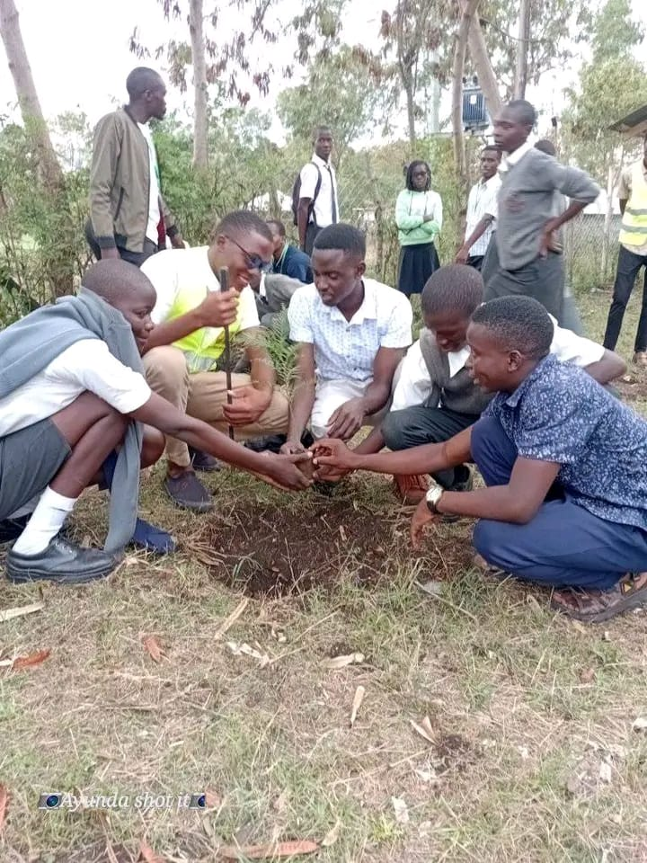
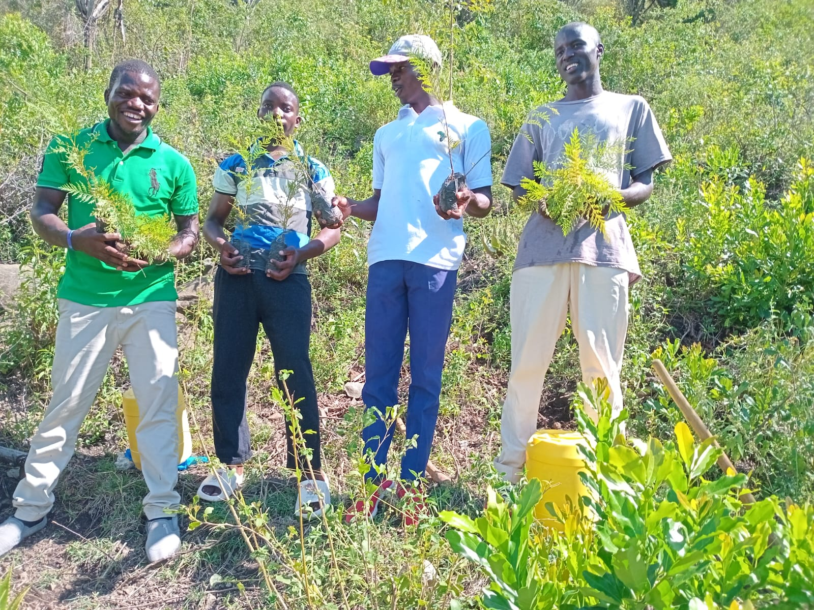
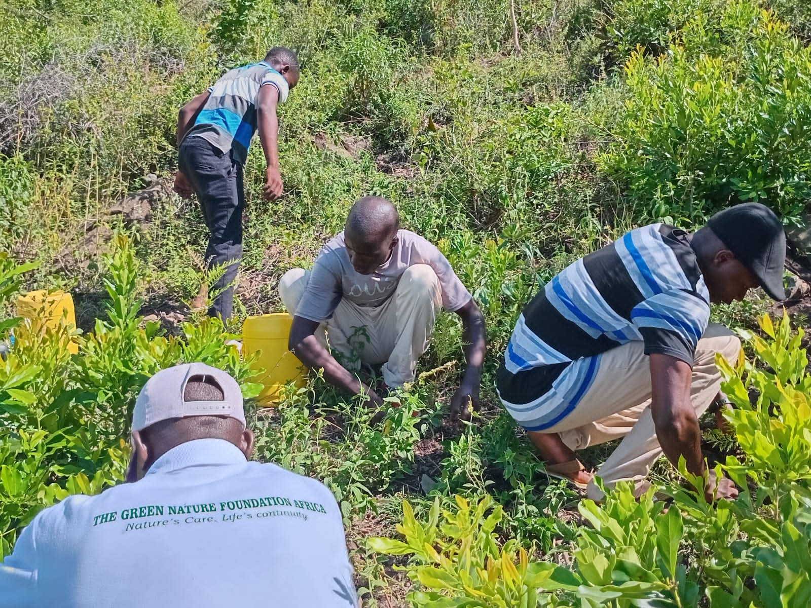
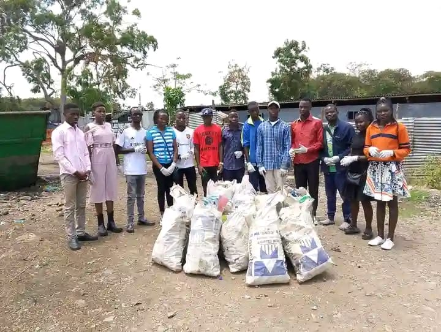
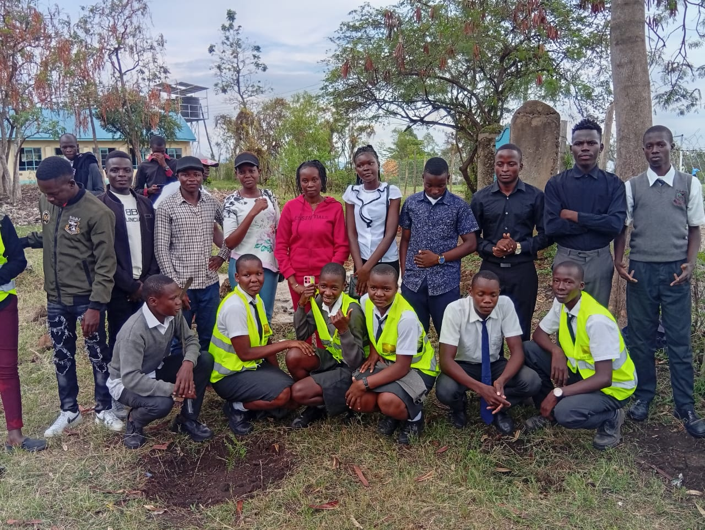
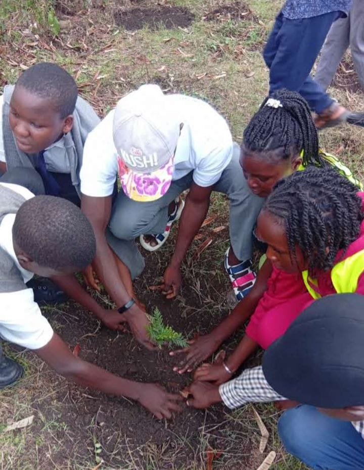
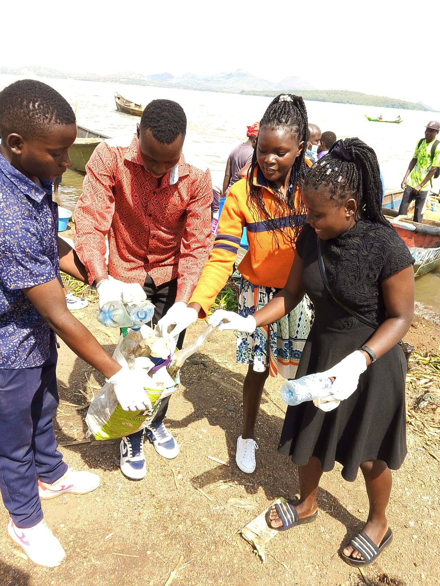
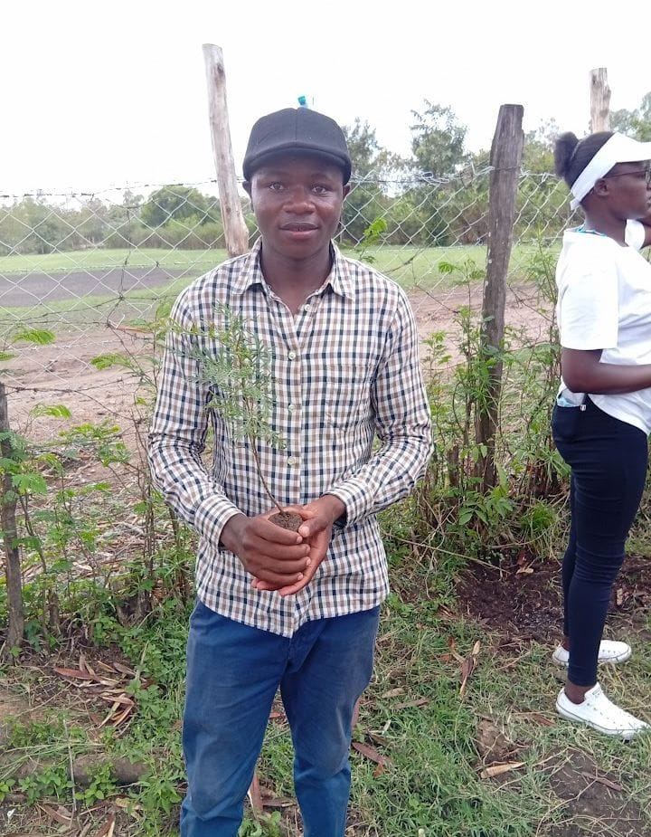

GREEN NATURE FOUNDATION AFRICA
"Nature's care, life continuity"
THE GREEN NATURE FOUNDATION was founded on 14th February 2025 by REINNHARD B. ODONGO with an idealistic quest to champion sustainable environmental practices and empower communities across Africa to protect and preserve its natural treasures. At TGNFA we believe in youthful ideas in environmental sustainance and the power of youths in driving change Nature's care, life continuity
MISSION
To champion sustainable environmental practices, foster biodiversity conservation and empower communities to protect and preserve the natural treasures of Africa and the globe at large. 
VISION
To be a leading force in cultivating a greener, healthier planet where communities thrive in harmony with nature, ensuring the preservation of Africa and the world's ecological heritage for the generations to come. 
OUR WORK
- Protecting Lake Victoria: Advocating for its conservation and addressing the environmental challenges it faces, such as pollution and overfishing.
- Sustainable Practices: Promoting environmentally friendly approaches aligned with the Sustainable Development Goals (SDGs).
- Nature Connection: Encouraging individuals and communities to build resilience and reconnect with nature for personal and environmental well-being. 
- Education and Advocacy: Raising awareness about environmental issues and equipping people with the knowledge to take meaningful action.
- Community Empowerment: Supporting local communities by promoting environmental stewardship and offering practical solutions for sustainable living. 
- Biodiversity Preservation: Ensuring the protection and restoration of diverse ecosystems, focusing on species native to Lake Victoria and its surroundings.
- Youth and Education Engagement: Inspiring the next generation by involving them in conservation activities and fostering an appreciation for the environment. 
- Innovative Conservation Approaches: Exploring new technologies and traditional knowledge to tackle environmental challenges.
- Partnership and Collaboration: Building networks with other organizations, governments, and individuals to amplify environmental impact. 
- Climate Change Mitigation: Advocating for actions that reduce greenhouse gas emissions and promoting adaptation strategies in vulnerable areas. 
CONTACT
At The Green Nature Foundation Africa (TGNFA), we believe that transformative change starts with collective action. We value every opportunity to connect with individuals, communities, and organizations who are passionate about creating a more sustainable future for generations to come. We are here to listen and collaborate.
FOUNDER & CEO
Phone: +254 794 889582
Email: bonkereinnhard01@gmail.com

PROGRAM OFFICER
Phone: +254 796 719599
Email: samuelmalela615@gmail.com
SECRETARY
Phone: 0796 943289
Email: collinswawire060@gmail.com
📍 Get in Touch
Your participation matters. Together, let's nurture a greener, healthier Africa for generations to come.
OUR ADDRESS
The Green Nature Foundation Africa
72-40126, Nyang'ande
Kisumu, Kenya
Call Us
+254 794 889582
Email Us
greennaturefoundationafrica@gmail.com
Social Media
@green nature foundation Africa